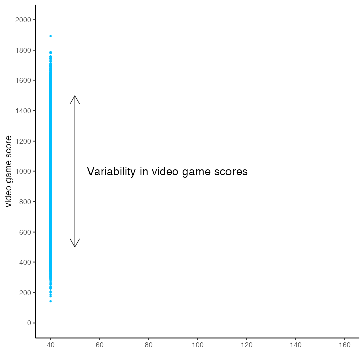
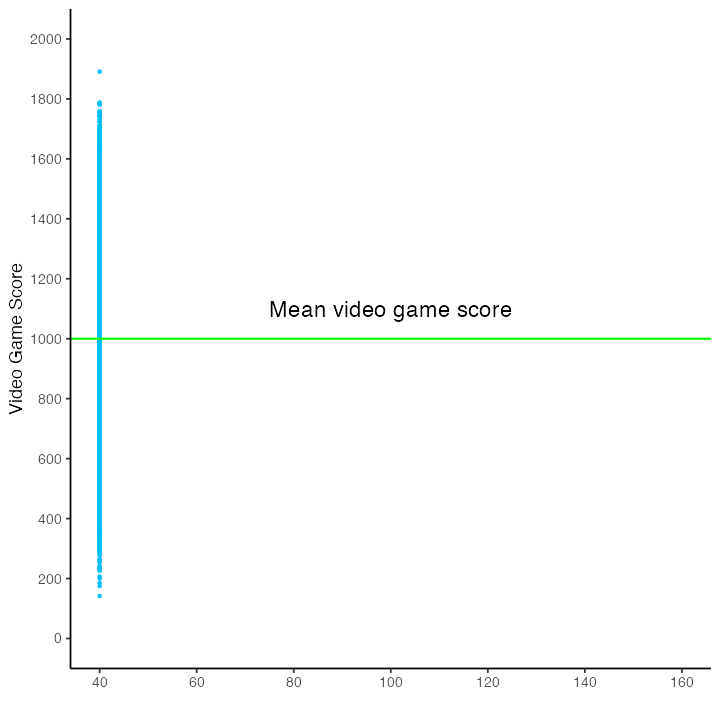
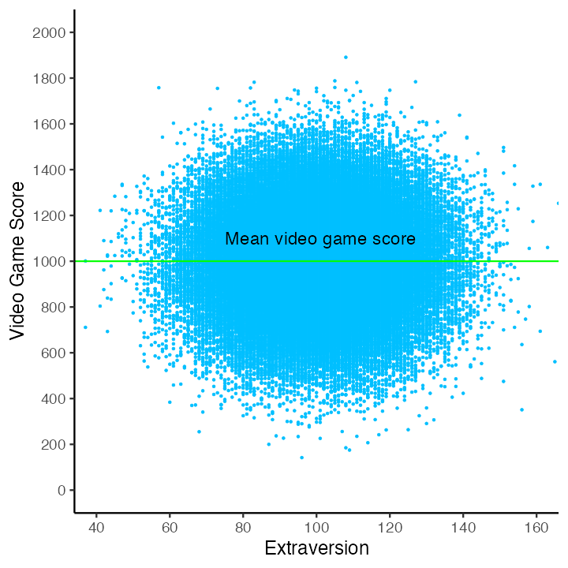

Chapter 8 Regression and correlation
The following CRAN packages must be installed:
| Required CRAN Packages |
|---|
| tidyverse |
| apaTables |
| cocor |
| janitor |
| psych |
| Required Data |
|---|
| data_cor_sample_video_game.csv |
8.1 Population example

Consider the following the scenario, we want to examine the extent to which IQ predicts video game scores for people who live in the City of Guelph. We want to make conclusions about people who live in the City of Guelph so we refer to Guelph citizens as our population. Because we are interested in using IQ to predict video game score we refer to IQ as the predictor. The value being predicted is video game score and we refer to that variable as the criterion (i.e., the dependent variable). Imagine, for a moment, that we are actually able to get an IQ and a video game score for everyone in the City of Guelph (N = 100,000).
8.1.1 No predictor
We illustrate the range and variability of video game scores for everyone in the population below. There are 100,000 blue dots on this graph. Each blue dot represents a person in the population. The vertical position of the dot indicates each person’s video game.
Notice the large number of dots (i.e., people) - there are so many that it’s hard to see individual dots/people.
The dots illustrate the range of video game scores - everyone did not obtain the same score.
We want to try to understand why, in this population, some people have higher vs lower video game scores.
Said another way, we want to explain, for this population, the variability in video game scores.
Correlation/regression can never provide evidence of causation (or explanation) but we can use those analyses to find a pattern in our data that is consistent with a causal relation. Then we conduct a second experimental study to determine if their really is a causal relation.

Without a predictor variable, our best estimate of a person’s video game score is the population mean. Moreover, without a predictor, we have the same estimate for everyone in the population - the mean video game score for the population. We have no way of creating an individualized estimate of someone’s video game score. The mean video game score is illustrated in the figure below with a horizontal green line.

8.1.2 Weak relation
We can plot a variable (e.g., extraversion) against video game score to see if there is a relation between the two. In this case there doesn’t appear to be a relation. Indeed, this graph illustrates a zero correlation between extraversion and video game scores - the weakest possible relation for a predictor. Effectively, there is no linear relation between extraversion and video game scores.
As before, we place a horizontal green line on the graph to indicate the mean video game score. We also place a red regression line (i.e., best-fit line) on the graph; however, the red line is completely hidden by the green line representing the mean video game score. In this case, with these data, knowing a person’s extraversion score does not allow us to provide an individualized estimate of a person’s video game score. As a result, extraversion does not help us explain the variability in video game scores. That is, extraversion scores do not allow us to explain why some people have high video game score whereas other people have low video game scores.

8.1.3 Strong relation
What if we were to try another variable – like IQ? The graph below illustrates a positive linear relation between IQ and video game score. As before, we place a green horizontal line on the graph to indicate the population mean. Additionally, we place a red regression line (i.e., a best-fit line) on the graph. This red regression line represents, for each person, an individualized estimate of video game score based on their IQ. The population-level regression line has the slope 8.00; which indicate that as IQ increase by 1.0 point video game score increases by 8.00 points. The equation for the regression line is:
\[ \begin{aligned} \widehat{score} &= 8.00(IQ) + 200.31 \end{aligned} \]
Or using the more generic X/Y notation:
\[ \begin{aligned} \hat{Y} &= 8.00(X) + 200.31 \\ \end{aligned} \] You can see in the graph below that, for some people, the individualized estimate of video game score (i.e., the y-axis position of the red line) is higher than the population mean. That is, in some cases the red regression is line is higher than the green line for the population mean. For other people, the individualized estimate of video game score (i.e., the y-axis position of the red line) is lower than the population mean. That is, in some cases the red regression is line is lower than the green line for the population mean. It appears that individuals with a high IQ tend to have a high video game score whereas individuals with a low IQ tend of have a low video game score. The regression line provides a more nuanced estimate for individual’s video game score than you can obtain by simply using the same estimation (i.e., the population mean) for everyone.
But how good is this model of the data? There are a variety of way of assessing model fit. We present two below. First, when you are only concerned about how well a single predictor performs, as is the case here, you can use a correlation. The symbol for the population correlation is \(\rho\). In these data, \(\rho = .60\). The correlation coefficient can range from -1 to 1. The further the correlation is from zero - the stronger the relation between the predictor and the criterion. That is, the further the correlation is from zero the better a linear model fits the data. A positive correlation indicates that as one variable increases the other variable also increases. A negative correlation indicates that as one variable increases the other variable decreases.
Cohen’s benchmarks are below:
| Cohen (1988) Label | Value |
|---|---|
| Small | \(\rho\) = .10 |
| Medium | \(\rho\) = .30 |
| Large | \(\rho\) = .50 |
An alternative, and more general, means of assessing the quality of statistical model is to use \(R^2\). This indexes the proportion of video game scores that are accounted for by a statistical model. One important attribute of \(R^2\) is that can be used when there are multiple predictors. When there is only one predictor, \(R^2\) is simply the correlation squared. Thus, at the population level, when there is only one predictor:
\[ \begin{aligned} R^2 = \rho^2 \end{aligned} \]
To summarize, the population-level values (i.e., parameters):
Slope = 8.00
\(\rho = .60\)
\(R^2 = .36\)
In the next section we use sample-level data to estimate these population-level values.
8.2 Consider a sample
Unfortunately, we never/rarely have data for everyone in the population (in this example everyone in the City of Guelph). Consequently, we usually have to select a subset of the population as a sample and use sample data for our analyses. In the figure below there are 100,000 blue dots - each dot represents an individual in the population. Additionally, there are also 9 black dots. These black dots are a random subset of the population – our sample. We will use the data from our sample (i.e., the 9 black dots) to estimate the slope, correlation, and \(R^2\) for the population (i.e., the 100,000 blue dots).
We always need to remember the values calculated from our sample (statistics) are only estimates of the population-level parameters; estimates that are likely are likely to differ from population parameters due to sampling error.
Let’s look at our sample in more detail. Notice, in the figure below, that there is one data point (\(X_i\), \(Y_i\)) for each of the 9 people. We illustrate the mean video game score for the 9 people with the horizontal green line.
We can calculate the variance of the video game scores using the formula below.
\[ \begin{aligned} s^2_{score} = \frac{\sum{(Y_i - \bar{Y})^2}}{N-1} \end{aligned} \]
It’s often useful to just focus on the numerator of this equation. We call this Sum of Squares Total (SSR):
\[ \begin{aligned} SS_{Total} = \sum{(Y_i - \bar{Y})^2} \end{aligned} \]
The values used in the Sum of Squares Total calculation are illustrated in the figure below. The vertical blue line indicates the difference between \(Y_i\) and \(\bar{Y}\). The \(SS_{Total}\) value indexes the variability of the actual video game scores around the sample mean.
In the figure below we add the regression line in red. The regression line is a statistical model for the data (a best-fit line). The regression line will always run through the joint mean of the two variables (i.e., the [\(\bar{X}\), \(\bar{Y}\)] point).

Recall that the regression line represents an individualized estimate of each person’s video game score derived from their IQ (via the regression equation). Later we will show you how to calculate the regression line. For now, accept that the regression equation for the sample in standard notation is:
\[ \begin{aligned} \hat{Y_i} &= 9.44(X_i) -21.21 \\ \end{aligned} \]
And contextualized to the variable names is:
\[ \begin{aligned} \widehat{score_i} &= 9.44(IQ_i) -21.21 \end{aligned} \]
Therefore, the predicted value for Jane is:
\[ \begin{aligned} \widehat{score_i} &= 9.44(IQ_i) -21.21 \\ &= 9.44(71) - 21.21 \\ &= 649 \text{(rounded)} \\ \end{aligned} \]
You can see this calculation for everyone in the sample:
In the graph below each person is represented by a blue dot. The estimate of each person’s video game score, \(\hat{Y_i}\), derived from the regression equation, is indicated by a red dot on the red regression line. The vertical blue lines are used to indicate, for each person (i.e., blue dot, \(Y_i\)), the estimate of their video game score (i.e., red dot, \(\hat{Y_i}\)).

We can calculate the extent to which individualized estimates are better than the sample mean for modeling the data. That is, we can calculate the extent to which the regression line is better at modeling the data than the mean line. We do so by calculating the extent to which the individualized estimates on the regression line differ from the sample mean. This is done with the calculation below for the Sum of Squares Regression.
\[ \begin{aligned} SS_{Regression} = \sum{(\hat{Y_i} - \bar{Y})^2} \end{aligned} \]
The values used in the Sum of Squares Regression calculation are illustrated in the figure below. The vertical red line indicates the difference between \(\hat{Y_i}\) and \(\bar{Y}\). The \(SS_{Regression}\) value indexes the variability of the estimates of video game scores around the sample mean. The longer the vertical red line (i.e., the larger the \((\hat{Y_i} - \bar{Y})\) difference) the better the model. Longer vertical red lines are associated with models that do a better job of accounting for variability in video scores.

So far we have calculated two values, \(SS_{Regression}\) and \(SS_{Total}\). The \(SS_{Total}\) value indexes the variability of actual video game scores about the sample mean (it’s the numerator for the variance calculation). In contrast, \(SS_{Regression}\) indexes the variability of estimated video game scores about the sample mean. We can calculate the proportion of the variability in actual scores accounted for the statistical model (i.e., regression line) using \(R^2\):
\[ \begin{aligned} R^2 = \frac{SS_{Regression}}{SS_{Total}} \end{aligned} \] We can also think of this as in terms of variance (because N-1 terms cancel each other out).
\[ \begin{aligned} R^2 &= \frac{\text{Variance of predicted scores}}{\text{Variance of actual scores}} \\ &= \frac{\frac{\sum{(\hat{Y_i} - \bar{Y})^2}}{N-1}}{\frac{\sum{(Y_i - \bar{Y})^2}}{N-1}} \\ &= \frac{\sum{(\hat{Y_i} - \bar{Y})^2}}{\sum{(Y_i - \bar{Y})^2}} \\ &= \frac{SS_{Regression}}{SS_{Total}}\\ \end{aligned} \]
8.2.1 Regression
Let’s obtain the actual value for \(R^2\), as well as the slope, using R. We can obtain the regression model (i.e.. linear model or lm) using the command below:
We display the result using apaTables:
Which produces the output:

If we examine the fit column on the far right of the output above we see \(R^2\) = .74, 95% CI [.17, .86]. This value indicates that in this sample 74% of the variability in video scores is accounted accounted for by the statistical model (i.e., red regression line). The confidence interval suggests a plausible range of values for the \(R^2\) at the population-level is .17 to .86. Notice that this range captures that population-level \(R^2\) of .36 that we calculated from the entire population previously.
\[ \begin{aligned} R^2 &= .736 = .74\\\\ \end{aligned} \]
If we examine the b column in the output we can create the regression equations below:
\[ \begin{aligned} \hat{Y_i} &= 9.44(X_i) -21.21 \\ \widehat{score_i} &= 9.44(IQ_i) -21.21\\ \end{aligned} \]
This tells use the slope in our sample is 9.44, 95% CI [4.39, 14.50]. That is, in the sample, each IQ point is associated with an additional 9.44 points in the video game. The population regression line might have a smaller/larger slope. The 95% confidence intervals tells us that a plausible range of values for the slope of the regression line at the population-level is 4.39 to 14.50. Notice that this range captures that population-level slope of 8.00 that we calculated from the entire population previously.
Additional regression details are provided with the command below.
##
## Call:
## lm(formula = video_game ~ iq, data = sample_data)
##
## Residuals:
## Min 1Q Median 3Q Max
## -201.2 -80.4 58.6 79.8 151.3
##
## Coefficients:
## Estimate Std. Error t value Pr(>|t|)
## (Intercept) -21.21 225.86 -0.09 0.9278
## iq 9.44 2.14 4.42 0.0031 **
## ---
## Signif. codes:
## 0 '***' 0.001 '**' 0.01 '*' 0.05 '.' 0.1 ' ' 1
##
## Residual standard error: 130 on 7 degrees of freedom
## Multiple R-squared: 0.736, Adjusted R-squared: 0.698
## F-statistic: 19.5 on 1 and 7 DF, p-value: 0.003098.2.2 Correlation
As discussed previously, a correlation can be considered a fit index for a linear regression line. That is, a correlation indicates the extent to which the data fit a straight line (i.e., the extent to which the data fit a linear model). Correlation values range between -1 and +1. The further a correlation value is from 0 the more tightly points will cluster around the regression line.
A positive correlation indicates that as one value increases the other value increases. For example, as height increases weight increases.
A negative correlation indicates that as one value increases the other values decreases. For example, as study time increases the number of errors on an exam decreases.
A few possible positive correlations are illustrated below – notice the relation between the graph and the strength of the correlation.

You can obtain the correlation from our sample data with the command below:
##
## Pearson's product-moment correlation
##
## data: sample_data$iq and sample_data$video_game
## t = 4.4, df = 7, p-value = 0.003
## alternative hypothesis: true correlation is not equal to 0
## 95 percent confidence interval:
## 0.4503 0.9696
## sample estimates:
## cor
## 0.8579From this output we extract the numbers below in APA reporting style:
There was a positive relation between IQ and video game score, such that as IQ increased, so did video game score, \(r\) = .86, 95% CI[.45, .97], \(p\) = .003, N = 9.
8.2.3 Graphing
A scatter plot can be made code below:
my_plot <- ggplot(data = sample_data,
mapping = aes(x = iq, y = video_game)) +
geom_point(color = "blue", size = 4) +
coord_cartesian(xlim = c(70, 140), ylim = c(400, 1500)) +
scale_y_continuous(breaks = seq(400, 1500, by = 200)) +
scale_x_continuous(breaks = seq(70, 140, by = 20)) +
labs(x = "IQ", y = "Video Game Score") +
theme_classic(24)8.3 Comparing correlations
In this part of the chapter we compare correlations within and across studies we do so with the cocor package. We begin by obtaining a data set from the psych package. Note that we do not use the library(psych) command due to conflicts with the tidyverse.
# Obtain the bfi data set from the psych package
bfi <- psych::bfi
# remove empty rows/columns and clean the variable names
bfi <- bfi %>%
remove_empty("rows") %>%
remove_empty("cols") %>%
clean_names()Check out the large number of columns.
## Rows: 2,800
## Columns: 28
## $ a1 <int> 2, 2, 5, 4, 2, 6, 2, 4, 4, 2, 4, 2, 5, 5…
## $ a2 <int> 4, 4, 4, 4, 3, 6, 5, 3, 3, 5, 4, 5, 5, 5…
## $ a3 <int> 3, 5, 5, 6, 3, 5, 5, 1, 6, 6, 5, 5, 5, 5…
## $ a4 <int> 4, 2, 4, 5, 4, 6, 3, 5, 3, 6, 6, 5, 6, 6…
## $ a5 <int> 4, 5, 4, 5, 5, 5, 5, 1, 3, 5, 5, 5, 4, 6…
## $ c1 <int> 2, 5, 4, 4, 4, 6, 5, 3, 6, 6, 4, 5, 5, 4…
## $ c2 <int> 3, 4, 5, 4, 4, 6, 4, 2, 6, 5, 3, 4, 4, 4…
## $ c3 <int> 3, 4, 4, 3, 5, 6, 4, 4, 3, 6, 5, 5, 3, 4…
## $ c4 <int> 4, 3, 2, 5, 3, 1, 2, 2, 4, 2, 3, 4, 2, 2…
## $ c5 <int> 4, 4, 5, 5, 2, 3, 3, 4, 5, 1, 2, 5, 2, 1…
## $ e1 <int> 3, 1, 2, 5, 2, 2, 4, 3, 5, 2, 1, 3, 3, 2…
## $ e2 <int> 3, 1, 4, 3, 2, 1, 3, 6, 3, 2, 3, 3, 3, 2…
## $ e3 <int> 3, 6, 4, 4, 5, 6, 4, 4, NA, 4, 2, 4, 3, …
## $ e4 <int> 4, 4, 4, 4, 4, 5, 5, 2, 4, 5, 5, 5, 2, 6…
## $ e5 <int> 4, 3, 5, 4, 5, 6, 5, 1, 3, 5, 4, 4, 4, 5…
## $ n1 <int> 3, 3, 4, 2, 2, 3, 1, 6, 5, 5, 3, 4, 1, 1…
## $ n2 <int> 4, 3, 5, 5, 3, 5, 2, 3, 5, 5, 3, 5, 2, 1…
## $ n3 <int> 2, 3, 4, 2, 4, 2, 2, 2, 2, 5, 4, 3, 2, 1…
## $ n4 <int> 2, 5, 2, 4, 4, 2, 1, 6, 3, 2, 2, 2, 2, 2…
## $ n5 <int> 3, 5, 3, 1, 3, 3, 1, 4, 3, 4, 3, NA, 2, …
## $ o1 <int> 3, 4, 4, 3, 3, 4, 5, 3, 6, 5, 5, 4, 4, 5…
## $ o2 <int> 6, 2, 2, 3, 3, 3, 2, 2, 6, 1, 3, 6, 2, 3…
## $ o3 <int> 3, 4, 5, 4, 4, 5, 5, 4, 6, 5, 5, 4, 4, 4…
## $ o4 <int> 4, 3, 5, 3, 3, 6, 6, 5, 6, 5, 6, 5, 5, 4…
## $ o5 <int> 3, 3, 2, 5, 3, 1, 1, 3, 1, 2, 3, 4, 2, 4…
## $ gender <int> 1, 2, 2, 2, 1, 2, 1, 1, 1, 2, 1, 1, 2, 1…
## $ education <int> NA, NA, NA, NA, NA, 3, NA, 2, 1, NA, 1, …
## $ age <int> 16, 18, 17, 17, 17, 21, 18, 19, 19, 17, …Let’s select a small subset of the columns for our example:
You can confirm the smaller set of columns:
## Rows: 2,800
## Columns: 5
## $ a1 <int> 2, 2, 5, 4, 2, 6, 2, 4, 4, 2, 4, 2, 5, 5, 4…
## $ c1 <int> 2, 5, 4, 4, 4, 6, 5, 3, 6, 6, 4, 5, 5, 4, 5…
## $ e1 <int> 3, 1, 2, 5, 2, 2, 4, 3, 5, 2, 1, 3, 3, 2, 3…
## $ o1 <int> 3, 4, 4, 3, 3, 4, 5, 3, 6, 5, 5, 4, 4, 5, 5…
## $ gender <int> 1, 2, 2, 2, 1, 2, 1, 1, 1, 2, 1, 1, 2, 1, 1…These columns are single items from a personality measure.
a1 (Agreeableness)
c1 (Conscientiousness)
e1 (Extraversion)
o1 (Opennness)
You can obtain a condensed correlation matrix using the cor() command. You can specify use = “pairwise.complete.obs” for pairwise correlation - the documentation covers other options. The round(2) command rounds the correlations to two decimal places.
## a1 c1 e1 o1 gender
## a1 1.00 0.03 0.11 0.01 -0.16
## c1 0.03 1.00 -0.02 0.17 0.01
## e1 0.11 -0.02 1.00 -0.10 -0.13
## o1 0.01 0.17 -0.10 1.00 -0.10
## gender -0.16 0.01 -0.13 -0.10 1.00Or we could use apaTable apa.cor.table() command:

Inspecting the above table you see that the correlation between a1 and c1 with is r = .03, 95% CI [-.01, .07]. Likewise, the correlation between e1 and o1 is r = -.10, 95% CI [-.14, -.06]. We obtain the p-values for these relations below.
8.3.1 p-values
The code below obtains the p-value for the a1/c1 relation - a value of .144.
##
## Pearson's product-moment correlation
##
## data: bfi$a1 and bfi$c1
## t = 1.5, df = 2762, p-value = 0.1
## alternative hypothesis: true correlation is not equal to 0
## 95 percent confidence interval:
## -0.00949 0.06502
## sample estimates:
## cor
## 0.0278The code below obtains the p-value for the e1/o1 relation - a value sufficiently small we report it as \(p\) < .001
##
## Pearson's product-moment correlation
##
## data: bfi$e1 and bfi$o1
## t = -5.3, df = 2757, p-value = 1e-07
## alternative hypothesis: true correlation is not equal to 0
## 95 percent confidence interval:
## -0.13718 -0.06329
## sample estimates:
## cor
## -0.1004With p-values in hand we can write this up as:
Inspecting the above table you see that the correlation between a1 and c1 with is r = .03, 95% CI [-.01, .07], p = .144. Likewise, the correlation between e1 and o1 is r = -.10, 95% CI [-.14, -.06], p < .001.
8.3.2 Within a data set
In this section we look at comparing correlation within a single data set.
8.3.2.1 Non-overlapping correlations
We will compare the correlation to between (a1, c1) to the correlation between (e1, o1) with the cocor package. In this case, because neither of the variables in the first correlation (a1, c1) are in the second correlation (e1, o1) we refer to this as a non-overlapping correlation comparison.
The cocor command will provide a lot of output. We are most interested in the last part of the output corresponding to Zou (2007) which provides the confidence interval for the difference in the correlations. But we also want to examine the first part of the output which will show us the two original correlations (a1, c1) = 0.0276, and (e1, o1) = -0.1002 (these are the .03 and -.10 values prior to rounding). As well it also shows us the difference between them, Difference: r.jk - r.hm = 0.1278.
##
## Results of a comparison of two nonoverlapping correlations based on dependent groups
##
## Comparison between r.jk (a1, c1) = 0.0276 and r.hm (e1, o1) = -0.1002
## Difference: r.jk - r.hm = 0.1278
## Related correlations: r.jh = 0.1036, r.jm = 0.0125, r.kh = -0.0259, r.km = 0.1688
## Data: as.data.frame(bfi): j = a1, k = c1, h = e1, m = o1
## Group size: n = 2724
## Null hypothesis: r.jk is equal to r.hm
## Alternative hypothesis: r.jk is not equal to r.hm (two-sided)
## Alpha: 0.05
##
## pearson1898: Pearson and Filon's z (1898)
## z = 4.7832, p-value = 0.0000
## Null hypothesis rejected
##
## dunn1969: Dunn and Clark's z (1969)
## z = 4.7676, p-value = 0.0000
## Null hypothesis rejected
##
## steiger1980: Steiger's (1980) modification of Dunn and Clark's z (1969) using average correlations
## z = 4.7671, p-value = 0.0000
## Null hypothesis rejected
##
## raghunathan1996: Raghunathan, Rosenthal, and Rubin's (1996) modification of Pearson and Filon's z (1898)
## z = 4.7676, p-value = 0.0000
## Null hypothesis rejected
##
## silver2004: Silver, Hittner, and May's (2004) modification of Dunn and Clark's z (1969) using a backtransformed average Fisher's (1921) Z procedure
## z = 4.7671, p-value = 0.0000
## Null hypothesis rejected
##
## zou2007: Zou's (2007) confidence interval
## 95% confidence interval for r.jk - r.hm: 0.0753 0.1800
## Null hypothesis rejected (Interval does not include 0)We could write this as:
There was a negative weak relation between extraversion (e1) and openness (o1) such that as extraversion increased openness decreased, r = -.10, 95% CI [-.14, -.06], p < .001. In contrast, the relation between agreeableness (a1) and conscientiousness(c1) was non-significant, r = .03, 95% CI [-.01, .07], p = .144. The extraversion/openness relation was stronger than the agreeableness/conscientiousness relation, \(\Delta\)r = .13, 95% CI [.07, .18], p < .001.
8.3.2.2 Overlapping correlations
We will compare the correlation to between (a1, c1) to the correlation between (a1, e1) with cocor. In this case, because a1 is common to the first correlation (a1, c1) and the second correlation (e1, o1) we refer to this as an overlapping correlation comparison.
We obtain the (a1, e1) correlation, below, and find: r = .11, 95% [.07, .14], p < .001.
##
## Pearson's product-moment correlation
##
## data: bfi$a1 and bfi$e1
## t = 5.6, df = 2759, p-value = 2e-08
## alternative hypothesis: true correlation is not equal to 0
## 95 percent confidence interval:
## 0.06917 0.14294
## sample estimates:
## cor
## 0.1062We obtain the (a1, c1) correlation, below, and find: r = .03, 95% [-.00, .07], p = .14.
##
## Pearson's product-moment correlation
##
## data: bfi$a1 and bfi$c1
## t = 1.5, df = 2762, p-value = 0.1
## alternative hypothesis: true correlation is not equal to 0
## 95 percent confidence interval:
## -0.00949 0.06502
## sample estimates:
## cor
## 0.0278We use the cocor command to compare the two relations:
##
## Results of a comparison of two overlapping correlations based on dependent groups
##
## Comparison between r.jk (a1, c1) = 0.0263 and r.jh (a1, e1) = 0.1047
## Difference: r.jk - r.jh = -0.0784
## Related correlation: r.kh = -0.0248
## Data: as.data.frame(bfi): j = a1, k = c1, h = e1
## Group size: n = 2741
## Null hypothesis: r.jk is equal to r.jh
## Alternative hypothesis: r.jk is not equal to r.jh (two-sided)
## Alpha: 0.05
##
## pearson1898: Pearson and Filon's z (1898)
## z = -2.8820, p-value = 0.0040
## Null hypothesis rejected
##
## hotelling1940: Hotelling's t (1940)
## t = -2.8827, df = 2738, p-value = 0.0040
## Null hypothesis rejected
##
## williams1959: Williams' t (1959)
## t = -2.8793, df = 2738, p-value = 0.0040
## Null hypothesis rejected
##
## olkin1967: Olkin's z (1967)
## z = -2.8820, p-value = 0.0040
## Null hypothesis rejected
##
## dunn1969: Dunn and Clark's z (1969)
## z = -2.8775, p-value = 0.0040
## Null hypothesis rejected
##
## hendrickson1970: Hendrickson, Stanley, and Hills' (1970) modification of Williams' t (1959)
## t = -2.8827, df = 2738, p-value = 0.0040
## Null hypothesis rejected
##
## steiger1980: Steiger's (1980) modification of Dunn and Clark's z (1969) using average correlations
## z = -2.8765, p-value = 0.0040
## Null hypothesis rejected
##
## meng1992: Meng, Rosenthal, and Rubin's z (1992)
## z = -2.8754, p-value = 0.0040
## Null hypothesis rejected
## 95% confidence interval for r.jk - r.jh: -0.1325 -0.0251
## Null hypothesis rejected (Interval does not include 0)
##
## hittner2003: Hittner, May, and Silver's (2003) modification of Dunn and Clark's z (1969) using a backtransformed average Fisher's (1921) Z procedure
## z = -2.8765, p-value = 0.0040
## Null hypothesis rejected
##
## zou2007: Zou's (2007) confidence interval
## 95% confidence interval for r.jk - r.jh: -0.1317 -0.0250
## Null hypothesis rejected (Interval does not include 0)The cocor command provides a lot of output. We are most interested in the last part of the output corresponding to Zou (2007) which provides the confidence interval for the difference: -.13 to -.03. But we also want to examine the first part of the output which will show us the two original correlations \(r_{(a1, c1)}\) = 0.0276, and \(r_{(a1, e1)}\) = 0.10472 As well, the output also shows us the difference between thesee two correlations, Difference: r.jk - r.jh = -0.0784 (with rounding, -.08).
We can write this up as:
Agreeableness and extraversion were weakly related, r = .11, 95% [.07, .14], p < .001, such that as agreeableness increased so did extraversion. The relation between agreeableness and conscientiousness was non-significant, r = .03, 95% [-.00, .07], p = .14. The agreeableness/extraversion relation was significantly stronger than the agreeableness/conscientiousness relation, \(\Delta\)r = .08, 95% CI [.03, .13], p = .004.
8.3.3 Between data sets
In this section we look at comparing correlations from two data sets.
8.3.3.1 Create seperate data files for men and women (if needed)
We begin by creating two separate data sets - one for men and one for women:
bfi_men <- bfi %>%
filter(gender == 1) %>%
select(-gender)
bfi_women <- bfi %>%
filter(gender == 2) %>%
select(-gender)Use glimpse() to check out the subgroups. Note that it also tells you the number of participants in each subgroup.
## Rows: 919
## Columns: 4
## $ a1 <int> 2, 2, 2, 4, 4, 4, 2, 5, 4, 4, 5, 5, 1, 4, 1, 4,…
## $ c1 <int> 2, 4, 5, 3, 6, 4, 5, 4, 5, 5, 5, 4, 4, 5, 1, 4,…
## $ e1 <int> 3, 2, 4, 3, 5, 1, 3, 2, 3, 1, 2, 3, 2, 3, 6, 2,…
## $ o1 <int> 3, 3, 5, 3, 6, 5, 4, 5, 5, 6, 5, 6, 6, 6, 6, 4,…## Rows: 1,881
## Columns: 4
## $ a1 <int> 2, 5, 4, 6, 2, 5, 4, 4, 4, 1, 2, 1, 2, 2, 2, 4,…
## $ c1 <int> 5, 4, 4, 6, 6, 5, 4, 5, 1, 5, 3, 5, 6, 4, 5, 5,…
## $ e1 <int> 1, 2, 5, 2, 2, 3, 1, 1, 1, 1, 2, 1, 2, 1, 1, 1,…
## $ o1 <int> 4, 4, 3, 4, 5, 4, 5, 4, 4, 5, 6, 6, 5, 6, 2, 4,…8.3.3.2 Check out the subgroup correlations
For men, we can obtain the correlation between a1/e1 with the code below. From this we determine, r = .14, 95% [.07, .20], p < .001.
##
## Pearson's product-moment correlation
##
## data: bfi_men$a1 and bfi_men$e1
## t = 4.2, df = 910, p-value = 3e-05
## alternative hypothesis: true correlation is not equal to 0
## 95 percent confidence interval:
## 0.07448 0.20182
## sample estimates:
## cor
## 0.1387For women, we can obtain the correlation between a1/e1 with the code below. From this we determine, r = .06, 95% [.02, .11], p = .007.
##
## Pearson's product-moment correlation
##
## data: bfi_women$a1 and bfi_women$e1
## t = 2.7, df = 1847, p-value = 0.007
## alternative hypothesis: true correlation is not equal to 0
## 95 percent confidence interval:
## 0.01672 0.10754
## sample estimates:
## cor
## 0.062268.3.3.3 Comparison r(a1, e1)
We run the R commands below to compare the correlations for men and women.
library(cocor)
bfi_men_dataframe <- as.data.frame(bfi_men)
bfi_women_dataframe <- as.data.frame(bfi_women)
cocor( ~ a1 + e1 | a1 + e1,
data = list(bfi_men_dataframe, bfi_women_dataframe))##
## Results of a comparison of two correlations based on independent groups
##
## Comparison between r1.jk (a1, e1) = 0.1387 and r2.hm (a1, e1) = 0.0623
## Difference: r1.jk - r2.hm = 0.0765
## Data: list(bfi_men_dataframe, bfi_women_dataframe): j = a1, k = e1, h = a1, m = e1
## Group sizes: n1 = 912, n2 = 1849
## Null hypothesis: r1.jk is equal to r2.hm
## Alternative hypothesis: r1.jk is not equal to r2.hm (two-sided)
## Alpha: 0.05
##
## fisher1925: Fisher's z (1925)
## z = 1.9074, p-value = 0.0565
## Null hypothesis retained
##
## zou2007: Zou's (2007) confidence interval
## 95% confidence interval for r1.jk - r2.hm: -0.0021 0.1543
## Null hypothesis retained (Interval includes 0)The output reveals the correlation for men, \(r_{(a1, e1)}\) = 0.1387, .14 rounded, and women \(r_{(a1, e1)}\)= 0.0623, .06 rounded, in the output. We also see the comparison: Difference: r1.jk - r2.hm = 0.0765. Finally, we see the zou2007 95% confidence interval: -.00 to .15.
We write this up as:
For men, there was a positive relation between agreeableness (a1) and extraversion (e1), r = .14, 95% [.07, .20], p < .001, such that as agreeableness increased so did extraversion. Likewise, for women, there was a similar positive relation between agreeableness (a1) and extraversion (e1), r = .06, 95% [.02, .11], p = .007. We did not find a significant difference in the strength of these relations, \(\Delta\)r = .08, 95% CI [-.00, .15], p = .057.